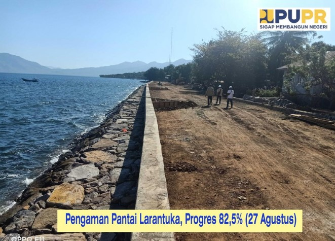
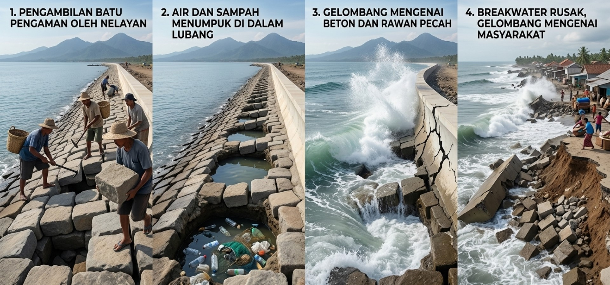
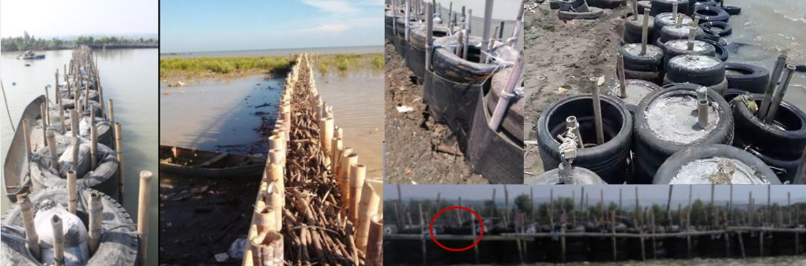

Breakwater atau yang biasa disebut alat/pengaman pemecah ombak adalah prasarana yang dibangun di depan garis pantai untuk memecah gelombang laut sekaligus menyerap sebagian besar energinya sebelum mencapai daratan.
Strukturnya terlihat sederhana: susunan batu besar, beton, atau material lain yang ditata berlapis mengikuti bentuk garis pantai. Tapi di balik kesederhanaan itu, ada rekayasa yang bekerja setiap kali gelombang datang, yaitu menahan, memecah, dan menyebarkan energi laut agar yang sampai ke daratan hanya sisa energi ombak yang terkontrol.

assets/pembangunanpupr1.jpgDi kaki Gunung Ile Mandiri, dengan pemandangan Pulau Adonara di kejauhan, Pantai Larantuka adalah salah satu sudut paling memesona di Flores Timur terutama saat matahari terbit dan terbenam. Tapi keindahan itu berbanding lurus dengan kerentanannya.
Pada bulan‑bulan tertentu, terutama Desember, ombak pasang datang menghantam garis pantai dengan keras. Terjangan ini tidak hanya mengikis daratan dan merusak fasilitas milik masyarakat dan rumah‑rumah penduduk yang tinggal persis di bibir pantai. Ancaman abrasi inilah yang akhirnya mendorong pembangunan pengaman pantai di Larantuka, dikerjakan bertahap sejak 2016 oleh Kementerian PUPR melalui Balai Wilayah Sungai Nusa Tenggara II.
Mengurangi energi ombak besar sebelum mencapai daratan dan tambak.
Membuat area tambatan tenang sehingga kapal tidak terhempas gelombang.
Melindungi garis pantai dan tambak warga dari pengikisan air laut yang terus‑menerus.
Menjaga alur keluar‑masuk kapal tetap tenang, terprediksi, dan tidak berbahaya.
Dari luar, breakwater terlihat seperti tumpukan batu yang berantakan. Padahal ketidakteraturan itu justru disengaja — enam mekanisme berikut menjelaskan kenapa.
Gelombang yang datang dipecah ke berbagai arah oleh susunan batu yang tidak rata, sehingga kehilangan sebagian besar energinya sebelum sisanya memantul kembali.
Air yang lolos di celah‑celah batu dipaksa berputar dan bergesekan dengan permukaan batu, membuat kecepatannya terus menurun.
Batu paling depan menyerap benturan pertama, sehingga struktur beton di belakangnya hanya menerima sisa energi yang jauh lebih kecil.
Armor rock, underlayer, dan filter fabric menahan lapisan tanah pondasi agar tidak ikut tersedot keluar setiap kali ombak surut.
Bentuk batu yang tidak rata membuat aliran energi gelombang tersebar ke banyak arah, bukan menumpuk pada satu titik struktur.
Karena energi sudah diserap sejak benturan pertama, limpasan air ke belakang struktur (wave run‑up) berkurang — daratan di baliknya lebih terlindungi.
Setiap tahun bercerita: kapan pantai mundur dimakan abrasi, dan kapan ia mulai maju kembali sejak breakwater dibangun. Gulir untuk mengikuti garis waktunya.
Sebelum ada pengaman apa pun, abrasi mulai menggerus garis pantai secara perlahan setiap musim ombak pasang.
Ada periode pemulihan alami, namun sifatnya sementara dan belum ada struktur permanen yang menahan abrasi berikutnya.
Titik abrasi terparah. Ombak pasang Desember menghantam keras, mengikis daratan dan mengancam rumah warga di bibir pantai.
PUPR membangun aspal jalan inspeksi yang dimajukan 12-16 meter dari garis pantai lama, lalu breakwater ditata di depannya. Garis pantai mulai pulih.
Dengan breakwater selesai, sedimen tertahan dan garis pantai melonjak maju. Capaian paling signifikan dalam seluruh periode pengamatan.
Karena breakwater sudah selesai dan bekerja sesuai fungsinya, pergerakan garis pantai menyusut menjadi hanya sekian puluh sentimeter.
Garis pantai stabil dan breakwater menjalankan fungsinya dengan perubahan yang hampir 0 meter. Hanya perubahan akibat pasang surut saja.
Setelah abrasi terparah pada 2016–2017, Kementerian PUPR lewat Balai Wilayah Sungai Nusa Tenggara II mempercepat pembangunan. Jalan inspeksi diaspal dan dimajukan sekitar 15 meter dari garis pantai lama — lalu susunan breakwater ditata di depannya sebagai tembok pertahanan pertama.
Pekerjaan tahap 2020 meliputi tembok revetment, timbunan penahan gelombang, dan jalan inspeksi selebar 10 meter, dengan anggaran sekitar Rp 20,75 miliar dari APBN. Dikerjakan oleh PT Putra Kencana KSO PT Yola Dana Tama dengan pengawasan CV Saba Consult, masa pelaksanaan 180 hari kalender.
Per akhir Agustus 2020 progres tercatat 82,5%. Sempat ada pembongkaran ulang sepanjang 45 meter jalan inspeksi setelah uji daya dukung tanah belum memenuhi syarat — tanah digali ulang, ditimbun, dan dipadatkan sesuai spesifikasi sebelum dilanjutkan, dengan target selesai akhir November 2020.
Tanpa disadari dampaknya, batu‑batu pengaman ini kerap diambil untuk kebutuhan lain — padahal setiap batu punya peran teknis dalam susunannya.

assets/ambilbatu.jpgUntuk dijadikan pemberat jaring, bagan tancap, atau jangkar dadakan.
→Rongga yang ditinggalkan menjadi jalan masuk air, sampah, dan erosi kecil yang terus membesar.
→Tanpa lapisan batu pelindung, beton di baliknya menerima benturan penuh dan rawan retak atau pecah.
→Fungsi peredam hilang — gelombang kembali menghantam talud, jalan, bahkan permukiman di baliknya.
Pakai pemberat jaring atau bagan dari beton cetak atau bahan lain — bukan batu breakwater.
Sampaikan ke aparat desa, dinas terkait, atau pengelola pelabuhan bila melihat breakwater rusak.
Jadikan breakwater sebagai aset bersama yang dijaga oleh seluruh komunitas nelayan.
Bagikan informasi ini ke rekan‑rekan nelayan lain agar semua memahami pentingnya breakwater.
Kerusakan tidak harus menunggu perbaikan besar dari pemerintah. Langkah awal ini bisa dilakukan lebih cepat oleh warga dan kelompok nelayan setempat.
Hentikan aktivitas di titik yang rusak dan pasang tanda peringatan sederhana agar tidak ada yang menambah beban di area tersebut.
Sampaikan ke aparat desa, dinas terkait, atau pengelola pelabuhan agar kerusakan dapat diverifikasi dan masuk rencana perbaikan.
Isi rongga yang terbentuk dengan karung berisi tanah atau pasir untuk menahan laju erosi selagi menunggu perbaikan permanen.
Bila kerusakan meluas dan perbaikan permanen belum bisa segera dilakukan, bangun Alat Pemecah Ombak (APO) sederhana dari ban bekas atau bambu, disesuaikan dengan karakter pesisir setempat.
Libatkan kelompok nelayan atau petani tambak setempat untuk membangun bersama, lalu jadwalkan perawatan rutin agar hasilnya bertahan lama.
Ketika perbaikan permanen belum bisa dilakukan segera, masyarakat pesisir di tempat lain — seperti di Semarang — sudah membuktikan bahwa APO sederhana dari ban bekas dan bambu mampu memberi perlindungan nyata sambil menunggu penanganan penuh.

assets/apo1.jpgBan bekas kendaraan disusun berlapis mengikuti garis pantai, lalu ruang tengahnya diisi karung tanah atau pasir agar tidak mudah bergeser. Cocok untuk melindungi tambak yang menghadap laut secara langsung.
Struktur permeable dari bambu dan ranting yang menangkap sedimen dari arus laut. Selain menahan abrasi, sedimen yang tertangkap menciptakan daratan baru yang bisa ditanami mangrove. Biayanya jauh lebih terjangkau dibanding APO ban.
Baik ban bekas maupun bambu bukan pengganti breakwater permanen — keduanya adalah jembatan perlindungan sambil menunggu penanganan penuh, sekaligus bukti bahwa masyarakat bisa berperan langsung menjaga pantainya sendiri.